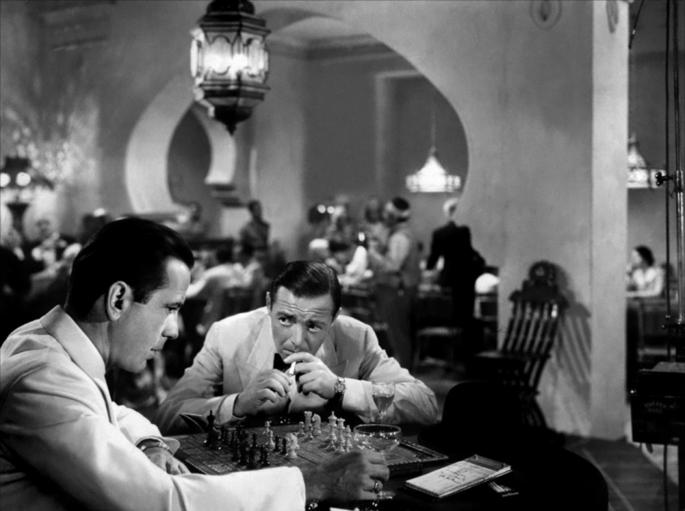
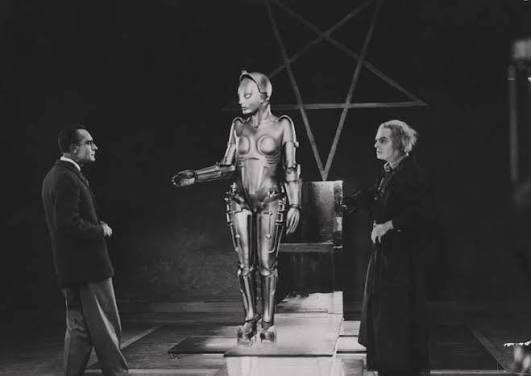
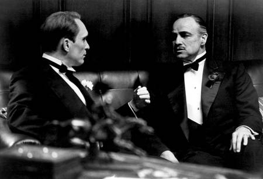
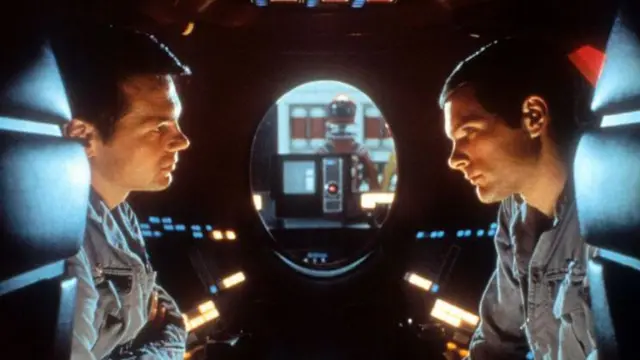
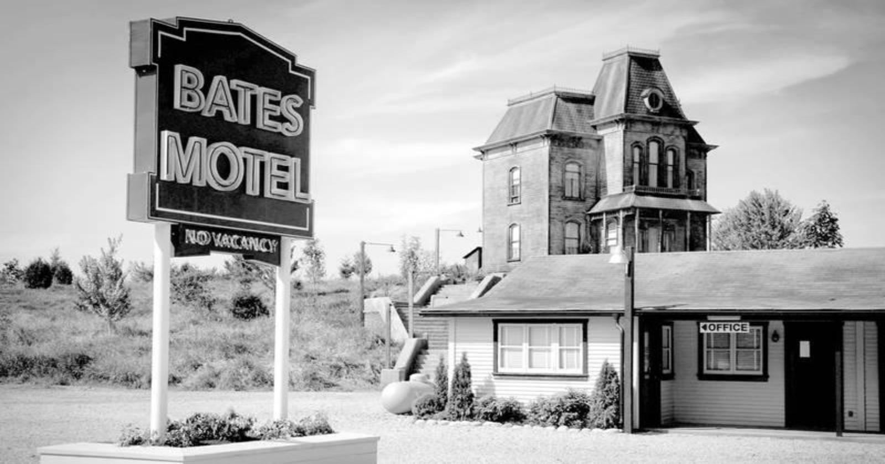

Clásico Imperdible

Drama / Romance
★ 9.2
Casablanca
Dirigida por Michael Curtiz (1942)
En el Marruecos de la Segunda Guerra Mundial, el propietario de un club nocturno debe
decidir si ayuda a su antiguo amor y a su esposo a ponerse a salvo.
Expresionismo Mudo

Sci-Fi / Silente
★ 8.3
Metrópolis
Dirigida por Fritz Lang (1927)
En una ciudad futurista distópica, el hijo del gobernante se enamora de una líder de los trabajadores y busca acabar con la extrema división de clases.
Obra Maestra

Crimen / Drama
★ 9.2
El Padrino
Dirigida por Francis Ford Coppola (1972)
El patriarca de una dinastía del crimen organizado transfiere el control de su vasto imperio clandestino a su hijo, quien inicialmente se muestra reacio.
Ciencia Ficción

Sci-Fi / Aventura
★ 8.3
2001: Odisea del Espacio
Dirigida por Stanley Kubrick (1968)
Una misteriosa estructura negra vincula el pasado y el futuro de la humanidad, mientras unos astronautas viajan a Júpiter con la súper computadora HAL 9000.
Thriller Psicológico

Terror / Misterio
★ 8.5
Psicosis
Dirigida por Alfred Hitchcock (1960)
Una secretaria que huye con dinero robado se hospeda en un motel aislado administrado por un joven con una relación muy perturbadora con su madre.
Cine Épico
.jpeg)
Acción / Drama
★ 8.6
Los Siete Samuráis
Dirigida por Akira Kurosawa (1954)
Una aldea de humildes granjeros explotados contrata a siete samuráis sin amo para que los protejan de unos despiadados bandidos que pretenden saquear su cosecha.